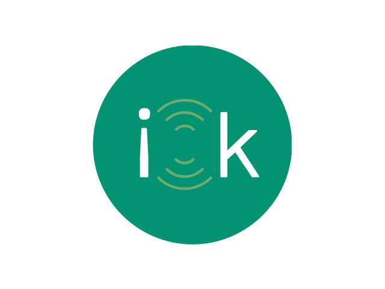

<ion-view view-title="I OK">
  <ion-content>
    <div class="contact-page">
      <div class="contact-page__updated-list">
        <div class="list-title">Recent Updates</div>
        <div class="list">
          <div class="item contact" ng-click="main.onContactSelected(contact)"
               ng-repeat="contact in main.contacts | filter: main.contactedHasUpdate | orderBy: '+updatedAt'">
            
            <div class="contact__title">{{contact.displayName}}</div>
            <div class="contact__event">last iOK {{contact.lastDisaster}}</div>
            <div class="contact__update" am-time-ago="contact.updatedAt"></div>
          </div>
        </div>
      </div>
      <div class="contact-page__main-list">
        <div class="contacts-list">
          <div class="list-title">Contacts</div>
          <div>
            <contact-list items="main.contacts" on-contact-click="main.onContactSelected(contact)"></contact-list>
          </div>
        </div>
        <personal-status-controls ng-if="!main.friendsListInForeground"></personal-status-controls>
      </div>
    </div>
    
  </ion-content>
</ion-view>
